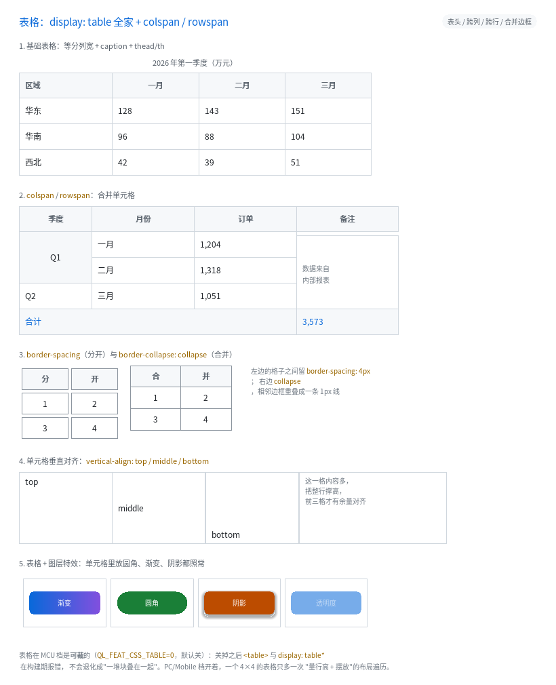

表格：display: table 全家 + colspan / rowspan

完整程序：example/33_table/
在这之前，想画一个表格只能拿嵌套的 flex 拼：一行一个容器、每个格子固定宽度，
表头、跨行、跨列全得手算。B7 把真正的表格做进来了：
<table>
<caption>一季度</caption>
<thead><tr><th>区域</th><th>一月</th></tr></thead>
<tbody><tr><td>华东</td><td>128</td></tr></tbody>
</table>
table { width: 520px; border-collapse: collapse; }
th, td { border: 1px solid #D0D7DE; padding: 5px 8px; vertical-align: middle; }
1. 结构：只有"单元格"有盒子
浏览器里表格是两套 display 交叉的结构：
table ← 表格本身（有盒子）
├ caption ← 表格标题（有盒子，排在表格上方）
├ thead ← 行组（**没有盒子**，只是分组）
│ └ tr ← 行（**没有自己的内容盒**，只是分组）
│ └ td ← 单元格（真正的盒子：有背景、边框、内边距）
本库照这个模型实现，所以有一条重要推论：样式要写在 td / th 上，
写在 tr / thead 上不会有边框和背景（和浏览器一样）。
| HTML 标签 | display |
|---|---|
<table> |
table |
<caption> |
table-caption |
<thead> / <tbody> / <tfoot> |
table-row-group |
<tr> |
table-row |
<td> |
table-cell |
<th> |
table-cell + 加粗 + 居中 |
<colgroup> / <col> |
table-column / table-column-group（只提供列宽，不产生盒子；见 §6） |
也可以不写标签，直接用 CSS 的 display: table / table-row / table-cell 拼。
2. 列宽怎么定：fixed 与 auto
table-layout: fixed（快、可预测）与 auto（按内容自适应）都支持：
- fixed：列宽由第一行的
width（或<col>）决定，余量按各列宽度比例摊回； - auto：先量每列的
min-content/max-content，再在[floor, pref]之间插值。
下面先看 fixed：
- 首行里显式写了
width的单列单元格 → 这一列就是那个宽度； - 其余列等分剩下的宽度（余数给右边那几列）；
- 表格宽度取
width（没写就是父容器的可用宽度）。
table { width: 520px } /* 4 列 → 每列 130px */
.w1 { width: 120px } /* 第一列 120px，其余 3 列平分 400 → 133/133/134 */
为什么先做 fixed：它只排一遍，而 auto 要先量每列的 min/max-content 再分配，
布局成本翻倍（那是下一步的事，覆盖表里如实标着）。
3. 跨行跨列：colspan / rowspan
<tr><td rowspan="2">Q1</td><td>一月</td><td>1,204</td></tr>
<tr><td>二月</td><td>1,318</td></tr>
<tr><td colspan="3">合计</td><td>3,573</td></tr>
colspan="N"：这个单元格占 N 列的宽度（含中间的列间距）；rowspan="N"：占 N 行的高度。下一行会少一个格子，后面的单元格自动右移 —— 这靠一个"每列还被占几行"的小计数器实现（24 字节，与行数无关）。- 跨行单元格的内容比这几行加起来还高时，差额补给覆盖的最后一行（与浏览器一致）。
属性值只认十进制整数；写 colspan="abc" 按 1 处理（浏览器也是这么做的）。
4. 间距与边框：border-spacing vs border-collapse
| 写法 | 效果 |
|---|---|
border-collapse: separate（默认） |
每个单元格是独立盒子，格子之间留 border-spacing 的缝 |
border-collapse: collapse |
相邻边框重叠成一条，不留缝 |
.sep { border-spacing: 4px } /* 横竖各 4px（也可以写两个值：横 竖） */
.col { border-collapse: collapse } /* 共享边只有 1px */
collapse 的做法很直接：把单元格朝左上挪"自己那半条边框"，同时把尺寸补回同样的量。
于是两个相邻单元格的边框落在同一像素上（不是两条线），而右/下边缘仍落在网格线上。
5. 单元格垂直对齐
td { height: 60px }
.va-top { vertical-align: top }
.va-mid { vertical-align: middle } /* 表格单元格的浏览器默认值 */
.va-bot { vertical-align: bottom }
行高由这一行里最高的单元格决定，矮的单元格再把内容按 vertical-align 摆：
middle 居中、bottom 靠底、top（默认）贴顶。
注意：
vertical-align在非表格元素上仍然只认baseline/sub/super（那是行内对齐，属于行内格式化上下文，本库还没有）。
6. 明确不做的（诚实清单）
| 项 | 现状 |
|---|---|
table-layout: auto |
✅ 已支持（先量 min/max-content，再在 [floor, pref] 之间插值） |
colgroup / col 的列宽声明 |
✅ 已支持（fixed 下优先于首行；auto 下是那一列的下界） |
caption-side: bottom |
标题恒在上方 |
table-header-group 的"每页重复表头" |
没有分页，无所谓 |
| 跨行单元格内容超高时的"按比例分配" | 差额全给覆盖的最后一行 |
border-collapse 的"半边边框相加" |
用重叠实现：前提是相邻单元格边框宽度相同（常见写法都满足） |
7. 代价与裁剪
| 项 | 值 |
|---|---|
| 每节点额外体积 | colspan / rowspan 各 1 字节（QLUINode 28 → 30） |
| 每样式额外体积 | 4 个字段共 8 字节（QLUIStyle 344 → 352） |
| 布局 | 每个单元格多排一遍（量行高 + 定位），跨行单元格再多一遍 |
| 编译开关 | QL_FEAT_CSS_TABLE（MCU 默认关） |
| 裁掉之后 | <table> 与 display: table* 构建期报错，不退化成"一堆块叠在一起" |
不要用表格做整页布局：<table> 的定位/浮动语义与 block 流不同，
整页布局请用 flex / grid；表格只用来显示二维数据。
8. 常见坑
- 样式写在
tr/thead上没效果 —— 它们不是盒子。边框、背景、内边距都写td/th。 width只认首行（fixed 语义）。第二行写width不会改列宽。border-spacing不接受百分比（CSS 也不允许），只接受 px。- 单元格里的
<br>与折行：white-space: normal+ 固定列宽就会折行； 默认nowrap会撑出格子（被裁掉），这是本库文本模型的既定行为。 th默认加粗居中 —— 这是 UA 默认值，要改就自己写font-weight/text-align。
上一章：旋转光栅：transform: rotate() / skew() / matrix() ｜
下一章：性能诊断与 MCU 基准